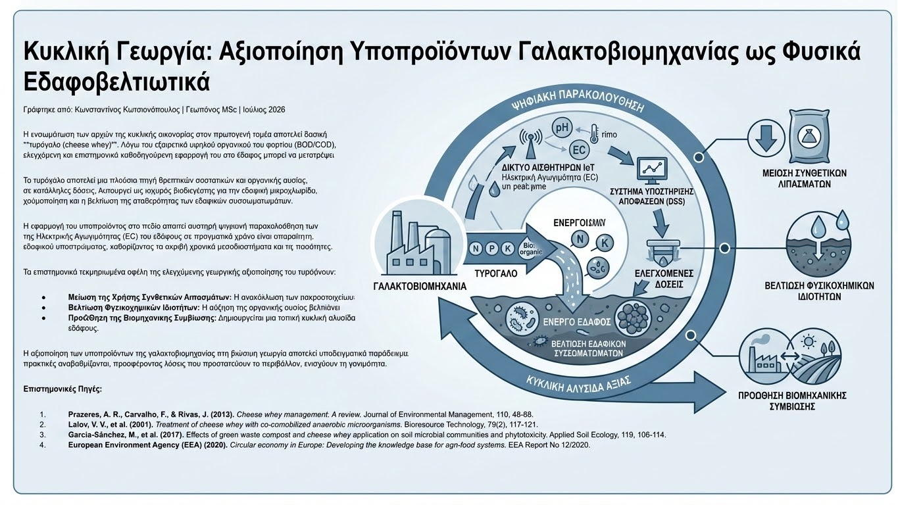

Η ενσωμάτωση των αρχών της κυκλικής οικονομίας στον πρωτογενή τομέα αποτελεί βασική προτεραιότητα για τη βιώσιμη ανάπτυξη. Οι βιομηχανικές μονάδες επεξεργασίας γάλακτος παράγουν σημαντικούς όγκους υγρών υποπροϊόντων, με κυριότερο το **τυρόγαλο (cheese whey)**. Λόγω του εξαιρετικά υψηλού οργανικού του φορτίου (BOD/COD), η ανεξέλεγκτη διάθεσή του στο περιβάλλον προκαλεί σοβαρά προβλήματα ρύπανσης των υδάτινων αποδεκτών. Ωστόσο, η γεωπονική έρευνα αναδεικνύει ότι η ελεγχόμενη και επιστημονικά καθοδηγούμενη εφαρμογή του στο έδαφος μπορεί να μετατρέψει ένα βιομηχανικό απόβλητο σε έναν πολύτιμο πόρο για την καλλιέργεια.
Το τυρόγαλο αποτελεί μια πλούσια πηγή θρεπτικών συστατικών και οργανικής ουσίας. Περιέχει σημαντικές ποσότητες **αζώτου (N), φωσφόρου (P), καλίου (K)**, ασβεστίου και μαγνησίου, καθώς και υδατάνθρακες (λακτόζη) και πρωτεΐνες. Όταν εφαρμόζεται σε κατάλληλες δόσεις, λειτουργεί ως ισχυρός βιοδιεγέρτης για την εδαφική μικροχλωρίδα. Η προσθήκη εύπεπτου οργανικού άνθρακα ενεργοποιεί τους αυτόχθονες πληθυσμούς των ωφέλιμων μικροοργανισμών του εδάφους, ενισχύοντας διεργασίες όπως η χούμοποίηση και η βελτίωση της σταθερότητας των εδαφικών συσσωματωμάτων.

Η εφαρμογή του υποπροϊόντος στο πεδίο απαιτεί αυστηρή ψηφιακή παρακολούθηση των εδαφικών παραμέτρων. Επειδή το ακατέργαστο τυρόγαλο έχει χαμηλό (όξινο) pH και υψηλή αλατότητα, η χρήση **δικτύων αισθητήρων IoT** για τη μέτρηση του pH και της Ηλεκτρικής Αγωγιμότητας (EC) του εδάφους σε πραγματικό χρόνο είναι απαραίτητη. Οι αλγόριθμοι των Συστημάτων Υποστήριξης Αποφάσεων (DSS) αναλύουν το ρυθμό διάσπασης και την ικανότητα ρυθμιστικής ικανότητας (buffering capacity) του εδαφικού υποστρώματος, καθορίζοντας τα ακριβή χρονικά μεσοδιαστήματα και τις ποσότητες δόσεων, ώστε να αποφευχθεί η αλάτωση ή η οξίνιση.
Τα επιστημονικά τεκμηριωμένα οφέλη της ελεγχόμενης γεωργικής αξιοποίησης του τυρογάλακτος περιλαμβάνουν:
- Μείωση της Χρήσης Συνθετικών Λιπασμάτων: Η ανακύκλωση των μακροστοιχείων (N, P, K) που περιέχονται στο υποπροϊόν επιτρέπει τη μείωση της βασικής ή επιφανειακής χημικής λίπανσης, ελαχιστοποιώντας το κόστος εισροών.
- Βελτίωση Φυσικοχημικών Ιδιοτήτων: Η αύξηση της οργανικής ουσίας βελτιώνει την ικανότητα συγκράτησης υγρασίας στα αμμώδη εδάφη και τον αερισμό στα συνεκτικά αργιλώδη εδάφη.
- Προώθηση της Βιομηχανικής Συμβίωσης: Δημιουργείται μια τοπική κυκλική αλυσίδα αξίας, όπου η γαλακτοβιομηχανία εκμηδενίζει το κόστος επεξεργασίας αποβλήτων και ο γειτονικός αγροτικός τομέας αποκτά δωρεάν φυσικά βελτιωτικά εδάφους.
Η αξιοποίηση των υποπροϊόντων της γαλακτοβιομηχανίας στη βιώσιμη γεωργία αποτελεί υποδειγματικό παράδειγμα κυκλικής οικονομίας. Με την υποστήριξη των σύγχρονων ψηφιακών εργαλείων ελέγχου και της γεωπονικής επιστήμης, οι παραδοσιακές πρακτικές αναβαθμίζονται, προσφέροντας λύσεις που προστατεύουν το περιβάλλον, ενισχύουν τη γονιμότητα των αγρών και μειώνουν το συνολικό αποτύπωμα άνθρακα της αγροδιατροφικής αλυσίδας.